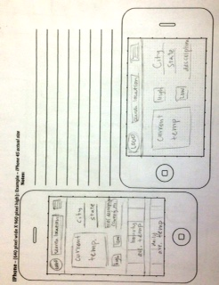
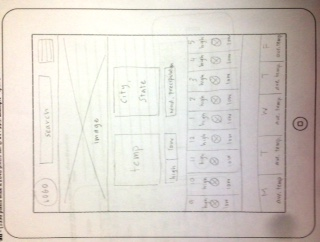
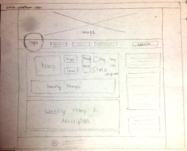

Site Purpose
The purpose of the website it to provide users with information about the weather. It will have hourly predictions for the temperature, as well as other predictions for wind and precipitation for certain locations. This weather site is being built so that people can plan and get an idea for what the day will be like.
Audience
The target audience for this website includes people aged 25-45. These are people that usually have a clear schedule and may need to plan according to the weather will be like. People younger than this would not take the time to check the temperature and might participate in activities regardless of how hot or cold the day is. People older than this tend to look outside and do not want to rely on a website.
The audience will have a high school or college education with an average income. Most of them will be married with children.
These people obviously experience the weather everyday, however they are not experts or meterologists. They are just looking for a breif, yet accurate description so that they can know what to expect.
They are most likely going to access this site on their mobile devices before they leave/on their way for work in the morning.
This means that when they visit the site they want to see the information straight away without having to navigate through different pages.
Persona
Fictional name: Gary Wood
Job title/major responsibilities: Works full time, likes to get outside of the office on weekends
Demographics: 35 years old
Married
Father of 2 children
Has a bachelor's degree
Goals and tasks: He is busy all day at work. When he gets home he likes to plan fun activities to do with his family. His main goal is to have a successful life, have good family connections, and keep up with his golfing team.
Environment: He is very capable of using the computer. He always has his phone on him which he mainly uses to check a few websites in his free time or when he is not at his desk. His most common use for the internet is business related, but every so often he will look at the news and check the weather.
Quote: Should I bring an umbrella to work today?
Wireframes
Small
Medium
Large
Peer Review
I had two people review my wireframes.Samantha said "Woooooaah! Your wireframes look so good! Like that's what I would want to see if I was looking at a weather website, it looks legit. Its simple but very informing. Great job and the design is spot on, seriously!"
Monica said "I looked at your designs and I think they look great! The only thing is that there might be too much white space for the mobile when it is sideways. Maybe just increase the size of everything just a little bit."
After this revision I have decided to keep my plans the same because I think they are good, and obviously my peers think they are good too. To address the white space on the small landscape device, I do not think it is a problem. I do not want the images too big and to access more content the user just needs to scroll down.